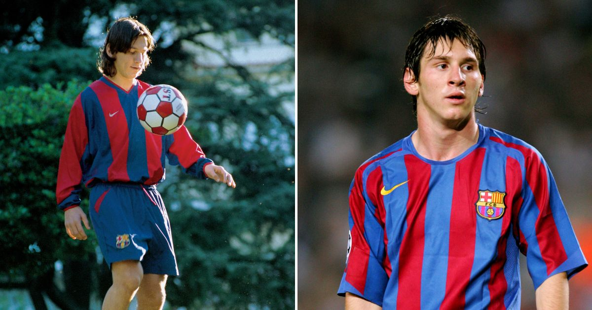
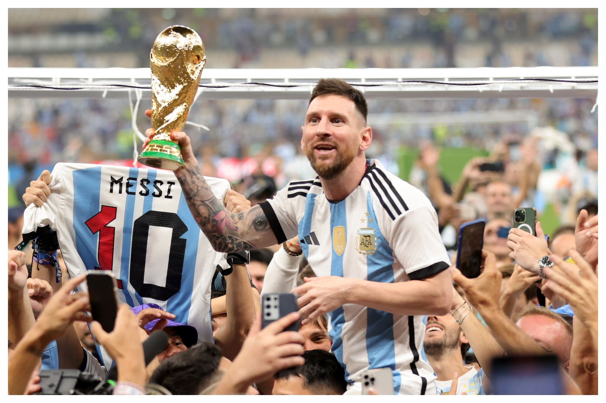

Early Life
Lionel Messi was born on June 24, 1987 in Rosario, Argentina. He was the third of four children and was raised in a tight-knit, football-loving family.
Messi started playing football as a boy and in 1995 joined the youth team of Newell's Old Boys (a Rosario-based top-division football club). Messi's phenomenal skills garnered the attention of prestigious clubs on both sides of the Atlantic. At age 13 Messi and his family relocated to Barcelona, and he began playing for FC Barcelona's under-14 team. He scored 21 goals in 14 games for the junior team, and he quickly graduated through the higher-level teams until at age 16 he was given his informal debut with FC Barcelona in a friendly match.
Career
Messi's professional career began in 2004 when he signed with FC Barcelona at the age of 17. He quickly became a key player for the team, and has since won numerous titles and awards.Until leaving the club in 2021, he had spent his entire professional career with Barcelona, where he won a club-record 34 trophies, including 10 La Liga titles, seven Copa del Rey titles and four UEFA Champions Leagues.On 10 August, Messi joined French club Paris Saint-Germain. He signed a two-year deal until June 2023 with an option for an extra year. Messi chose 30 as his squad number, the same he wore as a teenager when he made his senior debut for Barcelona.
Achievements
- 1 World Cup (2022)
- 1 Copa America (2021)
- 7 Ballon d'Or awards (2009, 2010, 2011, 2012, 2015, 2019, 2021)
- 4 Champions League titles (2006, 2009, 2011, 2015)
- 10 La Liga titles (2005, 2006, 2009, 2010, 2011, 2013, 2015, 2016, 2018, 2019)
- 3 Club World Cup titles (2009, 2011, 2015)
- 1 Olympic gold medal (2008)
Records
- Most goals in a calendar year (91 goals in 2012)
- Most goals in a single season of La Liga (50 goals in 2011-12 season)
- Most goals in a single European club season (73 goals in 2011-12season)
- Most goals in a single UEFA Champions League season (14 goals in 2011-12 season)
- Most goals in a single club football season (91 goals in 2012)
- Most hat-tricks in La Liga history (36 hat-tricks)
- Most goals scored in El Clásico matches (26 goals)
Don't write about him, don't try to describe him. Just watch him.
By Pep Guardiola
I'll wear the number 10 Jersey for the US National Team in honour of the Greatest athlete I have ever seen: Messi.
By Kobe Bryant